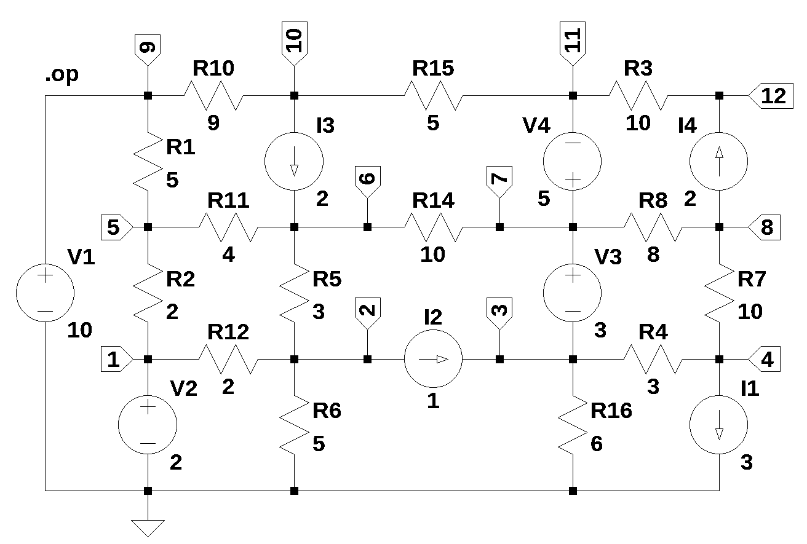

import os
from sympy import *
import numpy as np
from tabulate import tabulate
from scipy import signal
import matplotlib.pyplot as plt
import pandas as pd
import SymMNA
from IPython.display import display, Markdown, Math, Latex
init_printing()32 Test 2
Test circuit number 2 is a network consisting of resistors, voltage sources and current sources and drawn using LTSpice. The nodes are numbered left to right and bottom to top. Only independent sources are in this network. The network has 22 branches and 12 nodes, this will generate a large number of equations to test SymPy and my computer’s ability to generate symbolic solutions.

The net list for the circuit was generated by LTSpice and show below:
R1 9 5 5
R2 5 1 2
R5 6 2 3
R6 2 0 5
R8 8 7 8
R10 10 9 9
R11 6 5 4
R12 2 1 2
R14 7 6 10
R15 11 10 5
V1 9 0 10
V2 1 0 2
V3 7 3 3
V4 7 11 5
I1 4 0 3
I2 2 3 1
I3 10 6 2
I4 8 12 2
R7 8 4 10
R16 3 0 6
R3 12 11 10
R4 4 3 3The following Python modules are used in this notebook.
32.1 Load the net list
net_list = '''
R1 9 5 5
R2 5 1 2
R5 6 2 3
R6 2 0 5
R8 8 7 8
R10 10 9 9
R11 6 5 4
R12 2 1 2
R14 7 6 10
R15 11 10 5
V1 9 0 10
V2 1 0 2
V3 7 3 3
V4 7 11 5
I1 4 0 3
I2 2 3 1
I3 10 6 2
I4 8 12 2
R7 8 4 10
R16 3 0 6
R3 12 11 10
R4 4 3 3
'''32.2 Call the symbolic modified nodal analysis function
report, network_df, i_unk_df, A, X, Z = SymMNA.smna(net_list)Display the equations
# reform X and Z into Matrix type for printing
Xp = Matrix(X)
Zp = Matrix(Z)
temp = ''
for i in range(len(X)):
temp += '${:s}$<br>'.format(latex(Eq((A*Xp)[i:i+1][0],Zp[i])))
Markdown(temp)\(I_{V2} + v_{1} \cdot \left(\frac{1}{R_{2}} + \frac{1}{R_{12}}\right) - \frac{v_{5}}{R_{2}} - \frac{v_{2}}{R_{12}} = 0\)
\(v_{2} \cdot \left(\frac{1}{R_{6}} + \frac{1}{R_{5}} + \frac{1}{R_{12}}\right) - \frac{v_{6}}{R_{5}} - \frac{v_{1}}{R_{12}} = - I_{2}\)
\(- I_{V3} + v_{3} \cdot \left(\frac{1}{R_{4}} + \frac{1}{R_{16}}\right) - \frac{v_{4}}{R_{4}} = I_{2}\)
\(v_{4} \cdot \left(\frac{1}{R_{7}} + \frac{1}{R_{4}}\right) - \frac{v_{8}}{R_{7}} - \frac{v_{3}}{R_{4}} = - I_{1}\)
\(v_{5} \cdot \left(\frac{1}{R_{2}} + \frac{1}{R_{11}} + \frac{1}{R_{1}}\right) - \frac{v_{1}}{R_{2}} - \frac{v_{6}}{R_{11}} - \frac{v_{9}}{R_{1}} = 0\)
\(v_{6} \cdot \left(\frac{1}{R_{5}} + \frac{1}{R_{14}} + \frac{1}{R_{11}}\right) - \frac{v_{2}}{R_{5}} - \frac{v_{7}}{R_{14}} - \frac{v_{5}}{R_{11}} = I_{3}\)
\(I_{V3} + I_{V4} + v_{7} \cdot \left(\frac{1}{R_{8}} + \frac{1}{R_{14}}\right) - \frac{v_{8}}{R_{8}} - \frac{v_{6}}{R_{14}} = 0\)
\(v_{8} \cdot \left(\frac{1}{R_{8}} + \frac{1}{R_{7}}\right) - \frac{v_{7}}{R_{8}} - \frac{v_{4}}{R_{7}} = - I_{4}\)
\(I_{V1} + v_{9} \cdot \left(\frac{1}{R_{10}} + \frac{1}{R_{1}}\right) - \frac{v_{10}}{R_{10}} - \frac{v_{5}}{R_{1}} = 0\)
\(v_{10} \cdot \left(\frac{1}{R_{15}} + \frac{1}{R_{10}}\right) - \frac{v_{11}}{R_{15}} - \frac{v_{9}}{R_{10}} = - I_{3}\)
\(- I_{V4} + v_{11} \cdot \left(\frac{1}{R_{3}} + \frac{1}{R_{15}}\right) - \frac{v_{12}}{R_{3}} - \frac{v_{10}}{R_{15}} = 0\)
\(- \frac{v_{11}}{R_{3}} + \frac{v_{12}}{R_{3}} = I_{4}\)
\(v_{9} = V_{1}\)
\(v_{1} = V_{2}\)
\(- v_{3} + v_{7} = V_{3}\)
\(- v_{11} + v_{7} = V_{4}\)
The MNA method generates 16 equations. Given that this circuit has 12 nodes and is plannar so that 10 loop currents can be defined, it would seem that 10 or 13 equations would be sufficient to characterize the circuit. The generation of extra equations compaired to application of Kirchhoff’s current law (KCL) or Kirchhoff’s voltage law (KVL) requires more work to solve for the unknows.
32.2.1 Netlist statistics
print(report)Net list report
number of lines in netlist: 22
number of branches: 22
number of nodes: 12
number of unknown currents: 4
number of RLC (passive components): 14
number of inductors: 0
number of independent voltage sources: 4
number of independent current sources: 4
number of Op Amps: 0
number of E - VCVS: 0
number of G - VCCS: 0
number of F - CCCS: 0
number of H - CCVS: 0
number of K - Coupled inductors: 0
32.2.2 Connectivity Matrix
A\(\displaystyle \left[\begin{array}{cccccccccccccccc}\frac{1}{R_{2}} + \frac{1}{R_{12}} & - \frac{1}{R_{12}} & 0 & 0 & - \frac{1}{R_{2}} & 0 & 0 & 0 & 0 & 0 & 0 & 0 & 0 & 1 & 0 & 0\\- \frac{1}{R_{12}} & \frac{1}{R_{6}} + \frac{1}{R_{5}} + \frac{1}{R_{12}} & 0 & 0 & 0 & - \frac{1}{R_{5}} & 0 & 0 & 0 & 0 & 0 & 0 & 0 & 0 & 0 & 0\\0 & 0 & \frac{1}{R_{4}} + \frac{1}{R_{16}} & - \frac{1}{R_{4}} & 0 & 0 & 0 & 0 & 0 & 0 & 0 & 0 & 0 & 0 & -1 & 0\\0 & 0 & - \frac{1}{R_{4}} & \frac{1}{R_{7}} + \frac{1}{R_{4}} & 0 & 0 & 0 & - \frac{1}{R_{7}} & 0 & 0 & 0 & 0 & 0 & 0 & 0 & 0\\- \frac{1}{R_{2}} & 0 & 0 & 0 & \frac{1}{R_{2}} + \frac{1}{R_{11}} + \frac{1}{R_{1}} & - \frac{1}{R_{11}} & 0 & 0 & - \frac{1}{R_{1}} & 0 & 0 & 0 & 0 & 0 & 0 & 0\\0 & - \frac{1}{R_{5}} & 0 & 0 & - \frac{1}{R_{11}} & \frac{1}{R_{5}} + \frac{1}{R_{14}} + \frac{1}{R_{11}} & - \frac{1}{R_{14}} & 0 & 0 & 0 & 0 & 0 & 0 & 0 & 0 & 0\\0 & 0 & 0 & 0 & 0 & - \frac{1}{R_{14}} & \frac{1}{R_{8}} + \frac{1}{R_{14}} & - \frac{1}{R_{8}} & 0 & 0 & 0 & 0 & 0 & 0 & 1 & 1\\0 & 0 & 0 & - \frac{1}{R_{7}} & 0 & 0 & - \frac{1}{R_{8}} & \frac{1}{R_{8}} + \frac{1}{R_{7}} & 0 & 0 & 0 & 0 & 0 & 0 & 0 & 0\\0 & 0 & 0 & 0 & - \frac{1}{R_{1}} & 0 & 0 & 0 & \frac{1}{R_{10}} + \frac{1}{R_{1}} & - \frac{1}{R_{10}} & 0 & 0 & 1 & 0 & 0 & 0\\0 & 0 & 0 & 0 & 0 & 0 & 0 & 0 & - \frac{1}{R_{10}} & \frac{1}{R_{15}} + \frac{1}{R_{10}} & - \frac{1}{R_{15}} & 0 & 0 & 0 & 0 & 0\\0 & 0 & 0 & 0 & 0 & 0 & 0 & 0 & 0 & - \frac{1}{R_{15}} & \frac{1}{R_{3}} + \frac{1}{R_{15}} & - \frac{1}{R_{3}} & 0 & 0 & 0 & -1\\0 & 0 & 0 & 0 & 0 & 0 & 0 & 0 & 0 & 0 & - \frac{1}{R_{3}} & \frac{1}{R_{3}} & 0 & 0 & 0 & 0\\0 & 0 & 0 & 0 & 0 & 0 & 0 & 0 & 1 & 0 & 0 & 0 & 0 & 0 & 0 & 0\\1 & 0 & 0 & 0 & 0 & 0 & 0 & 0 & 0 & 0 & 0 & 0 & 0 & 0 & 0 & 0\\0 & 0 & -1 & 0 & 0 & 0 & 1 & 0 & 0 & 0 & 0 & 0 & 0 & 0 & 0 & 0\\0 & 0 & 0 & 0 & 0 & 0 & 1 & 0 & 0 & 0 & -1 & 0 & 0 & 0 & 0 & 0\end{array}\right]\)
32.2.3 Unknown voltages and currents
X\(\displaystyle \left[ v_{1}, \ v_{2}, \ v_{3}, \ v_{4}, \ v_{5}, \ v_{6}, \ v_{7}, \ v_{8}, \ v_{9}, \ v_{10}, \ v_{11}, \ v_{12}, \ I_{V1}, \ I_{V2}, \ I_{V3}, \ I_{V4}\right]\)
32.2.4 Known voltages and currents
Z\(\displaystyle \left[ 0, \ - I_{2}, \ I_{2}, \ - I_{1}, \ 0, \ I_{3}, \ 0, \ - I_{4}, \ 0, \ - I_{3}, \ 0, \ I_{4}, \ V_{1}, \ V_{2}, \ V_{3}, \ V_{4}\right]\)
32.2.5 Network dataframe
network_df| element | p node | n node | cp node | cn node | Vout | value | Vname | Lname1 | Lname2 | |
|---|---|---|---|---|---|---|---|---|---|---|
| 0 | V1 | 9 | 0 | NaN | NaN | NaN | 10.0 | NaN | NaN | NaN |
| 1 | V2 | 1 | 0 | NaN | NaN | NaN | 2.0 | NaN | NaN | NaN |
| 2 | V3 | 7 | 3 | NaN | NaN | NaN | 3.0 | NaN | NaN | NaN |
| 3 | V4 | 7 | 11 | NaN | NaN | NaN | 5.0 | NaN | NaN | NaN |
| 4 | R1 | 9 | 5 | NaN | NaN | NaN | 5.0 | NaN | NaN | NaN |
| 5 | R2 | 5 | 1 | NaN | NaN | NaN | 2.0 | NaN | NaN | NaN |
| 6 | R5 | 6 | 2 | NaN | NaN | NaN | 3.0 | NaN | NaN | NaN |
| 7 | R6 | 2 | 0 | NaN | NaN | NaN | 5.0 | NaN | NaN | NaN |
| 8 | R8 | 8 | 7 | NaN | NaN | NaN | 8.0 | NaN | NaN | NaN |
| 9 | R10 | 10 | 9 | NaN | NaN | NaN | 9.0 | NaN | NaN | NaN |
| 10 | R11 | 6 | 5 | NaN | NaN | NaN | 4.0 | NaN | NaN | NaN |
| 11 | R12 | 2 | 1 | NaN | NaN | NaN | 2.0 | NaN | NaN | NaN |
| 12 | R14 | 7 | 6 | NaN | NaN | NaN | 10.0 | NaN | NaN | NaN |
| 13 | R15 | 11 | 10 | NaN | NaN | NaN | 5.0 | NaN | NaN | NaN |
| 14 | I1 | 4 | 0 | NaN | NaN | NaN | 3.0 | NaN | NaN | NaN |
| 15 | I2 | 2 | 3 | NaN | NaN | NaN | 1.0 | NaN | NaN | NaN |
| 16 | I3 | 10 | 6 | NaN | NaN | NaN | 2.0 | NaN | NaN | NaN |
| 17 | I4 | 8 | 12 | NaN | NaN | NaN | 2.0 | NaN | NaN | NaN |
| 18 | R7 | 8 | 4 | NaN | NaN | NaN | 10.0 | NaN | NaN | NaN |
| 19 | R16 | 3 | 0 | NaN | NaN | NaN | 6.0 | NaN | NaN | NaN |
| 20 | R3 | 12 | 11 | NaN | NaN | NaN | 10.0 | NaN | NaN | NaN |
| 21 | R4 | 4 | 3 | NaN | NaN | NaN | 3.0 | NaN | NaN | NaN |
32.2.6 Unknown current dataframe
i_unk_df| element | p node | n node | |
|---|---|---|---|
| 0 | V1 | 9 | 0 |
| 1 | V2 | 1 | 0 |
| 2 | V3 | 7 | 3 |
| 3 | V4 | 7 | 11 |
32.2.7 Build the network equations
# Put matrices into SymPy
X = Matrix(X)
Z = Matrix(Z)
NE_sym = Eq(A*X,Z)Turn the free symbols into SymPy variables.
var(str(NE_sym.free_symbols).replace('{','').replace('}',''))\(\displaystyle \left( V_{2}, \ R_{1}, \ I_{V2}, \ v_{6}, \ R_{14}, \ I_{V1}, \ V_{4}, \ R_{3}, \ R_{7}, \ R_{5}, \ R_{4}, \ I_{2}, \ v_{12}, \ I_{3}, \ v_{8}, \ R_{16}, \ v_{11}, \ R_{15}, \ v_{3}, \ v_{1}, \ v_{5}, \ I_{V3}, \ v_{10}, \ R_{11}, \ V_{1}, \ I_{V4}, \ v_{4}, \ R_{8}, \ v_{9}, \ V_{3}, \ R_{12}, \ R_{6}, \ R_{10}, \ I_{4}, \ I_{1}, \ R_{2}, \ v_{2}, \ v_{7}\right)\)
32.3 Symbolic solution
The symbolic solution was taking longer than a couple of minutes on my i3-8130U CPU @ 2.20GHz, so I interruped the kernel and commended the code.
#U_sym = solve(NE_sym,X)Display the symbolic solution
#temp = ''
#for i in U_sym.keys():
# temp += '${:s} = {:s}$<br>'.format(latex(i),latex(U_sym[i]))
#Markdown(temp)32.4 Construct a dictionary of element values
element_values = SymMNA.get_part_values(network_df)
# display the component values
for k,v in element_values.items():
print('{:s} = {:s}'.format(str(k), str(v)))V1 = 10.0
V2 = 2.0
V3 = 3.0
V4 = 5.0
R1 = 5.0
R2 = 2.0
R5 = 3.0
R6 = 5.0
R8 = 8.0
R10 = 9.0
R11 = 4.0
R12 = 2.0
R14 = 10.0
R15 = 5.0
I1 = 3.0
I2 = 1.0
I3 = 2.0
I4 = 2.0
R7 = 10.0
R16 = 6.0
R3 = 10.0
R4 = 3.032.5 Numerical solution
Substitute numerical values in place the symbolic reference designators.
NE = NE_sym.subs(element_values)Display the equations with numeric values.
temp = ''
for i in range(shape(NE.lhs)[0]):
temp += '${:s} = {:s}$<br>'.format(latex(NE.rhs[i]),latex(NE.lhs[i]))
Markdown(temp)\(0 = I_{V2} + 1.0 v_{1} - 0.5 v_{2} - 0.5 v_{5}\)
\(-1.0 = - 0.5 v_{1} + 1.03333333333333 v_{2} - 0.333333333333333 v_{6}\)
\(1.0 = - I_{V3} + 0.5 v_{3} - 0.333333333333333 v_{4}\)
\(-3.0 = - 0.333333333333333 v_{3} + 0.433333333333333 v_{4} - 0.1 v_{8}\)
\(0 = - 0.5 v_{1} + 0.95 v_{5} - 0.25 v_{6} - 0.2 v_{9}\)
\(2.0 = - 0.333333333333333 v_{2} - 0.25 v_{5} + 0.683333333333333 v_{6} - 0.1 v_{7}\)
\(0 = I_{V3} + I_{V4} - 0.1 v_{6} + 0.225 v_{7} - 0.125 v_{8}\)
\(-2.0 = - 0.1 v_{4} - 0.125 v_{7} + 0.225 v_{8}\)
\(0 = I_{V1} - 0.111111111111111 v_{10} - 0.2 v_{5} + 0.311111111111111 v_{9}\)
\(-2.0 = 0.311111111111111 v_{10} - 0.2 v_{11} - 0.111111111111111 v_{9}\)
\(0 = - I_{V4} - 0.2 v_{10} + 0.3 v_{11} - 0.1 v_{12}\)
\(2.0 = - 0.1 v_{11} + 0.1 v_{12}\)
\(10.0 = v_{9}\)
\(2.0 = v_{1}\)
\(3.0 = - v_{3} + v_{7}\)
\(5.0 = - v_{11} + v_{7}\)
Solve for voltages and currents.
U = solve(NE,X)Display the numerical solution
Six significant digits are displayed so that results can be compared to LTSpice.
table_header = ['unknown', 'mag']
table_row = []
for name, value in U.items():
table_row.append([str(name),float(value)])
print(tabulate(table_row, headers=table_header,colalign = ('left','decimal'),tablefmt="simple",floatfmt=('5s','.6f')))unknown mag
--------- ----------
v1 2.000000
v2 1.532489
v3 -6.665281
v4 -16.236710
v5 4.408083
v6 4.750715
v7 -3.665281
v8 -18.141472
v9 10.000000
v10 -8.427681
v11 -8.665281
v12 11.334719
I_V1 -3.165903
I_V2 0.970286
I_V3 1.079596
I_V4 -2.047520The node voltages and current through the sources are solved for. The Sympy generated solution matches the LTSpice results:
--- Operating Point ---
V(9): 10 voltage
V(5): 4.40808 voltage
V(1): 2 voltage
V(6): 4.75072 voltage
V(2): 1.53249 voltage
V(8): -18.1415 voltage
V(7): -3.66528 voltage
V(10): -8.42768 voltage
V(11): -8.66528 voltage
V(3): -6.66528 voltage
V(4): -16.2367 voltage
V(12): 11.3347 voltage
I(I1): 3 device_current
I(I2): 1 device_current
I(I3): 2 device_current
I(I4): 2 device_current
I(R1): 1.11838 device_current
I(R2): 1.20404 device_current
I(R5): 1.07274 device_current
I(R6): 0.306498 device_current
I(R8): -1.80952 device_current
I(R10): -2.04752 device_current
I(R11): 0.0856581 device_current
I(R12): -0.233756 device_current
I(R14): -0.8416 device_current
I(R15): -0.0475201 device_current
I(R7): -0.190476 device_current
I(R16): -1.11088 device_current
I(R3): 2 device_current
I(R4): -3.19048 device_current
I(V1): -3.1659 device_current
I(V2): 0.970286 device_current
I(V3): 1.0796 device_current
I(V4): -2.04752 device_currentThe results from LTSpice agree with the SymPy results.